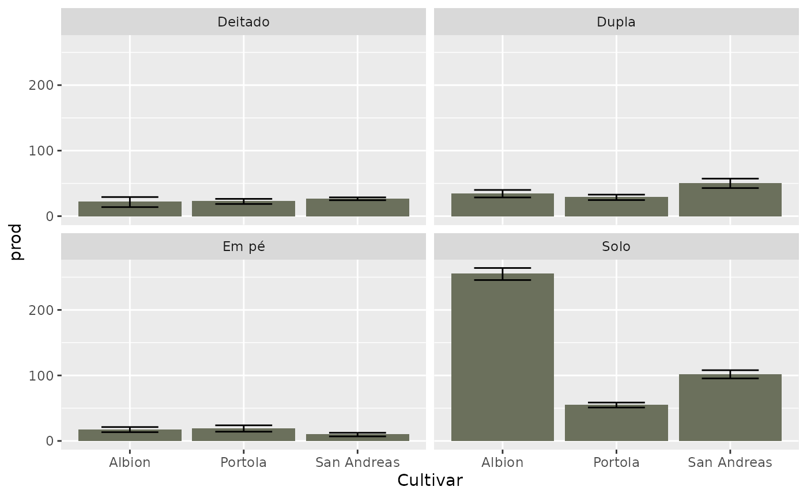

yield.RmdThe first thing that should be done for the analysis is the package loading:
library(stRawberry)In order to compare the yield of the cultivars, we should first create some visualizations to explore the data a little bit better:
diffPlot(
var = prod,
strata = cultivar,
facet = exp
)
As we can see in the plot above, the Albion yield was visually higher compared to the other two cultivars in the “Solo” experiment. In the other experiments, this difference is much softer.
Now we can make use of the view via table. Using the diffTable function, we can check a summary of the characteristics of each experiment:
# Create a list containing all experiments
experiments <- c("Solo", "Deitado", "Dupla", "Em pé")
# Run the table function for every experiment
purrr::map(
experiments,
diffTable
) %>%
purrr::set_names(experiments)
#> $Solo
#> # A tibble: 3 × 6
#> cultivar media_prod dp_prod brix frutos repeticoes
#> <chr> <dbl> <dbl> <dbl> <dbl> <int>
#> 1 Albion 255. 24.3 9.86 18.4 7
#> 2 Portola 54.8 10.7 10.6 5.42 8
#> 3 San Andreas 102. 17.7 9.5 9.69 8
#>
#> $Deitado
#> # A tibble: 3 × 6
#> cultivar media_prod dp_prod brix frutos repeticoes
#> <chr> <dbl> <dbl> <dbl> <dbl> <int>
#> 1 Albion 21.5 15.3 8.75 3.4 4
#> 2 Portola 22.5 7.80 9.5 4.25 4
#> 3 San Andreas 26.5 4.36 9.5 3 4
#>
#> $Dupla
#> # A tibble: 3 × 6
#> cultivar media_prod dp_prod brix frutos repeticoes
#> <chr> <dbl> <dbl> <dbl> <dbl> <int>
#> 1 Albion 34.3 11.4 9.25 2.82 4
#> 2 Portola 28.7 8.30 9 2.75 4
#> 3 San Andreas 50.1 14.4 9 3.1 4
#>
#> $`Em pé`
#> # A tibble: 3 × 6
#> cultivar media_prod dp_prod brix frutos repeticoes
#> <chr> <dbl> <dbl> <dbl> <dbl> <int>
#> 1 Albion 17.3 8.77 8.2 3.6 5
#> 2 Portola 19.0 10.8 7.6 3.88 5
#> 3 San Andreas 9.72 6.16 8.2 1.96 5Thus, we verify that, in fact, the greatest difference in yield is shown within the “Solo” experiment.
After the previous visualization, we might want to verify the difference significance between Albion and the other cultivars in the “Solo” experiment.
diffAnalysis(
var = "prod",
experiment = "Solo"
)
#> $ANOVA
#> VI Gl Soma dos quadrados Quadrados médios F p
#> 1 cultivar 2 160579.835 80289.9176 244.9486 8.619331e-15
#> 2 Residuals 20 6555.654 327.7827 NA NA
#>
#> $Tukey
#> Diferença Inferior Superior p
#> Portola-Albion -200.00243 -223.70864 -176.29623 2.797762e-14
#> San Andreas-Albion -153.08868 -176.79489 -129.38248 1.503353e-12
#> San Andreas-Portola 46.91375 24.01138 69.81612 1.287475e-04As can be seen from the output of the function, the cultivars, within the “Solo” experiment, all differ from each other in terms of yield.